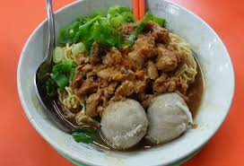

Nasi Goreng Special
Nasi adalah sebuah bagian penting dari masakan tradisional Tionghoa, menurut catatan sejarah sudah mulai ada sejak 4000 SM. Nasi goreng kemudian tersebar ke Asia Tenggara dibawa oleh perantau-perantau Tionghoa yang menetap di sana dan menciptakan nasi goreng khas lokal yang didasarkan atas perbedaan bumbu-bumbu dan cara menggoreng. Nasi goreng sebenarnya muncul dari beberapa sifat dalam kebudayaan Tionghoa, yang tidak suka mencicipi makanan dingin dan juga membuang sisa makanan beberapa hari sebelumnya. Makanya, nasi yang dingin itu kemudian digoreng untuk dihidangkan kembali di meja makan.
Read More.....
Mie Ayam Bakso

Mi ayam atau bakmi ayam adalah masakan Indonesia yang terbuat dari mi kuning direbus mendidih kemudian ditaburi saos kecap khusus beserta daging ayam dan sayuran. Mi Ayam terkadang ditambahi dengan bakso, pangsit dan jamur. Mi berasal dari Tiongkok tetapi mi ayam yang serupa di Indonesia tidak ditemukan di Tiongkok.[butuh rujukan] Mi ayam aslinya dari Tiongkok Selatan terutama dari daerah-daerah pelabuhan seperti Fujian dan Guandong.[butuh rujukan] Meskipun mi bukan asli Indonesia tapi nyatanya kini mi ayam seakan sudah menjadi makanan tradisional Indonesia. Makanan ini sudah tersebar di seluruh Indonesia, terutama di daerah Jawa makanan ini sangat mudah di temukan. Penjual mi ayam di Indonesia yang populer berasal dari Wonogiri.
Read More.....